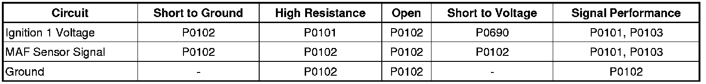
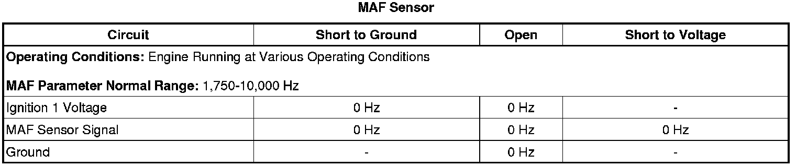

P0103
DTC P0102 or P0103
Diagnostic Instructions
* Perform the Diagnostic System Check - Vehicle (Initial Inspection and Diagnostic Overview) prior to using this diagnostic procedure.
* Review Strategy Based Diagnosis (Initial Inspection and Diagnostic Overview) for an overview of the diagnostic approach.
* Diagnostic Procedure Instructions (Initial Inspection and Diagnostic Overview) provides an overview of each diagnostic category.
DTC Descriptors
DTC P0102
- Mass Air Flow (MAF) Sensor Circuit Low Frequency
DTC P0103
- Mass Air Flow (MAF) Sensor Circuit High Frequency
Diagnostic Fault Information

Typical Scan Tool Data

Circuit/System Description
The mass air flow (MAF) sensor is integrated with the intake air temperature (IAT) sensor. The MAF sensor is an air flow meter that measures the amount of air entering the engine. The engine control module (ECM) uses the MAF sensor signal to provide the correct fuel delivery for all engine speeds and loads. A small quantity of air entering the engine indicates a deceleration or idle condition. A large quantity of air entering the engine indicates an acceleration or high load condition. The MAF/IAT sensor has the following circuits:
* An ignition 1 voltage circuit
* A ground circuit
* A MAF sensor signal circuit
* An IAT sensor signal circuit
* A low reference circuit
The ECM applies 5 volts to the MAF sensor on the MAF sensor signal circuit. The sensor uses the voltage to produce a frequency based on the inlet air flow through the sensor bore. The frequency varies within a range of near 2,000 Hertz at idle to near 10,000 Hertz at maximum engine load.
Conditions for Running the DTC
* The engine is running for greater than 1 second.
* The ignition 1 signal is greater than 8 volts.
* The above conditions are met for greater than 1 second.
* The DTC runs continuously when the above conditions are met.
Conditions for Setting the DTC
P0102
The ECM detects that the MAF Sensor parameter is less than 10 Hz for greater than 5 seconds.
P0103
The ECM detects that the MAF Sensor parameter is more than 14,500 Hz for greater than 5 seconds.
Action Taken When the DTC Sets
DTCs P0102 and P0103 are Type B DTCs.
Conditions for Clearing the MIL/DTC
DTCs P0102 and P0103 are Type B DTCs.
Diagnostic Aids
* A steady or intermittent high resistance of 15 ohms or greater on the ignition 1 voltage circuit will cause the MAF sensor signal to be increased by as much as 60 g/s.
* Depending on the current ambient temperature and the vehicle operating conditions, a MAF sensor signal circuit that is shorted to the IAT signal circuit will cause the MAF sensor signal to be skewed or erratic. Additionally it may cause a rapid fluctuation in the IAT Sensor parameter.
Reference Information
Schematic Reference
Engine Controls Schematics (Electrical Diagrams)
Connector End View Reference
Component Connector End Views (Connector Views)
Electrical Information Reference
* Circuit Testing (Component Tests and General Diagnostics)
* Connector Repairs (Component Tests and General Diagnostics)
* Testing for Intermittent Conditions and Poor Connections (Component Tests and General Diagnostics)
* Wiring Repairs (Component Tests and General Diagnostics)
DTC Type Reference
Powertrain Diagnostic Trouble Code (DTC) Type Definitions (Diagnostic Trouble Code Descriptions)
Scan Tool Reference
Control Module References (Programming and Relearning) for scan tool information
Special Tools
J 38522 Variable Signal Generator
Circuit/System Verification
1. Engine running, observe the scan tool MAF Sensor parameter. The reading should be between 1,700-3,800 Hz, depending on the engine coolant temperature (ECT).
2. A wide open throttle (WOT) acceleration from a stop should cause the MAF sensor parameter on the scan tool to increase rapidly. This increase should be from 2-6 g/s at idle to greater than 180 g/s at the time of the 1-2 shift.
Circuit/System Testing
1. Verify the integrity of the air induction system by inspecting for the following conditions:
* Damaged components
* Loose or improper installation
* An air flow restriction
* Any vacuum leak
* Water intrusion
2. Ignition OFF, disconnect the harness connector at the MAF/IAT sensor.
3. Ignition OFF for 90 seconds, test for less than 5 ohms of resistance between the MAF ground circuit terminal B and ground.
• If greater than the specified range, test the ground circuit for an open/high resistance.
4. Ignition ON, verify a test lamp illuminates between the ignition circuit 1 terminal C and ground.
• If the test lamp does not illuminate, test the ignition circuit for a short to ground or an open/high resistance.
5. Ignition ON, test for 4.8-5.2 volts between the MAF signal circuit terminal A and ground.
• If less than the specified range, test the signal circuit for a short to ground or an open/high resistance. If the circuit tests normal, replace the ECM.
• If greater than the specified range, test the signal circuit for a short to voltage. If the circuit tests normal, replace the ECM.
6. Ignition OFF, connect the red lead of the J 38522 to the signal circuit terminal A at the MAF/IAT sensor harness connector. Connect the battery voltage supply to B+, and ground the black lead.
7. Set the J 38522 signal to 5 volts, the Frequency to 5K, and the Duty Cycle to Normal.
8. Engine idling, observe the scan tool MAF Sensor parameter. The scan tool MAF Sensor parameter should be between 4,950-5,025 Hz.
• If the MAF Sensor parameter is not within the specified range, replace the ECM.
9. If all other circuits test normal, replace the MAF sensor.
Repair Instructions
Perform the Diagnostic Repair Verification (Verification Tests) after completing the diagnostic procedure.
* Mass Airflow Sensor/Intake Air Temperature Sensor Replacement (Service and Repair)
* Control Module References (Programming and Relearning) for ECM replacement, setup, and programming